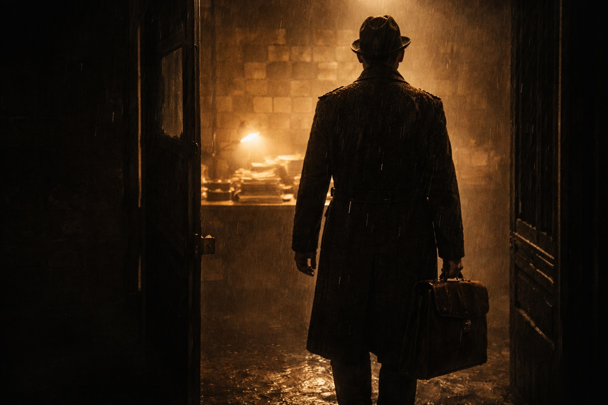

I’d had a sheltered upbringing on Lancashire’s Fylde coast, attending Rossall, a minor public school in Fleetwood. I was far more attached to playing cricket and hockey than burying my head in textbooks or considering an ascent up the greasy judicial pole.
It is fair to state that I had exited my childhood as an unrounded, damaged individual, but never willing to give an inch, or follow the crowd. I learned that owning a good ‘belly-button’ was far and away more beneficial than IQ. Many in the profession can cite more detailed case law and statute than I, but none can deploy it better - the capacity to swiftly realise one’s opponent’s weak points, then rain blows upon them mercilessly – as my father did on me. I was on no mission to fight the good fight, or land blows on those who policed the corridors of power. I’d been brought up to recognise right from wrong. I believed the English legal system to be infallible until I met Michael Desmond Robinson, a man brought up in poverty who was to alter the course of my life.
From Braintree in Essex, Michael had risen high on the Met’s hit list, and was recognised as an expert in the field of stately home burglaries. Not for Michael the paying of entrance fees or respecting the ‘Do Not Touch’ signs.
Nearing 40, he had fallen on hard times, and was living in the less-than-salubrious surrounds of Ossett, near Wakefield. The West Yorkshire police were, through their informant network, quick to log his arrival on their turf and they wanted him removed at any cost. The intelligence files on him from southern police forces ran to hundreds of pages.
For my part, I was mired in domestic conveyancing and running a branch office for Stephen Harrison. I was just 24, and, as with all general practices, had a varied workload. My criminal fayre came from my time on the Duty Solicitor Scheme, where, day or night, I could be called to impart advice to beleaguered detainees. It was all low-level criminality, but it led me into the world of advocacy in local magistrates’ courts. I would watch experienced lawyers with numerous files under their arms scuttling from court to court. I loved the cut and thrust even if, with my one file, I was generally just an onlooker.
One evening, my home phone rang. “Hello, this is the custody sergeant at Wood Street. We have a man under arrest for burglary who is asking for you to represent him.”
“Who?”
“Michael Desmond Robinson.”
“When will the officers be ready to interview, Sergeant?”
“As soon as you land, Mr Green.”
“Fine, I am on my way.”
I smiled as I placed the phone back on the receiver. He had specifically asked for me to represent him. It felt good.
I had met Robinson when I worked for a Leeds firm, and we had got on well. He knew that I was a beginner, but said he sensed that I was a fighter and a man of integrity, unlike one of the many lawyers he’d met who talked the talk but didn’t walk the walk.
On arriving at the police station in the centre of Wakefield, I was met by the DS (detective sergeant)in charge. I quickly learnt that the burglary had not been of a stately home, but rather an unoccupied council house. Little of value had been taken, and it had not been ransacked. The DS could not have been more charming. “Mr Green, we will have you back home shortly. Michael has agreed to tell us all about the burglary.”
This struck me as odd. The Michael I’d met was ‘old school’ and would never speak to the cops. I was led into an interview room, where Michael sat smiling. He shook me by the hand.” Thanks for coming out, Nick,” he said.
With the DS gone, I learnt that the cops had left Michael in a cell to stew, refusing his right to consult with a solicitor. “I told them if they got my lawyer, I would speak to them about the burglary.” I queried the arrangement. There was a pause and a smirk. “Nick, I do not speak to the police. I will say ‘no comment’ in the interview. They have nothing and just fancy pinning it on me.”
I sensed, armed with these instructions, the police’s bonhomie might soon end. We continued chatting about life in general before I alerted the DS that we could begin the interview.
The DS had been joined by a detective constable (DC) and their banter continued as they prepared the formalities for the interview. This was back in the bad old days of contemporaneous handwritten interviews, with all the protections of PACE (Police and Criminal Evidence Act 1984) in their infancy. I was to learn that, if these coppers had anything to do with it, PACE could die in its crib.
The DS gave Michael the caution and asked if he understood what it meant. He did. This was the early nineties, so the caution was in its correct, undiluted form. A right to silence with no threats attached. After all, what is a basic human right if it is followed with adverse consequences if you do not speak to the fine men in blue? The DS, his pen steadied to take down Michael’s full account of the burglary, was met with the first of many: “No comment.”
This one seemed to hang in the air as the two coppers glanced at each other. Levity was replaced with anger. The DS tried one more question. “No comment.” The fingers gripping the DS’s pen shook, and it clearly pained him to record these three syllables. Both officers then stared me in the eyes with a look of contempt as if it had been the Blackpudlian who had ambushed their carefully laid ‘guilty’ plan.
Michael took it all in his stride. To him, this was not a pressured situation, but one to be enjoyed. Me? I would remain out of my depth, and fail my client, from this moment on. Questions followed which were not written down.
“Is this how you are going to play it, Michael?” the DS spat out. I watched on. My law lectures had all been premised on legality, on the system working and being fair. Michael continued not to comment until the officer slammed his hand on the table and ended the interview. Not one item of evidence had been put to my client.
Silence prevailed, the stifling and oppressive kind of silence. The DS pointed to where he wanted us both to sign at the bottom of each page. On the last page Michael, being a pro, placed his signature directly under the last question. “We don’t want any surprises, do we?” he joked.
I could hear the two stymied detectives berating my client on the way back to the cells. The DS then walked me briskly out of the police station. “This is not how it works around here, Mr Green. If not this burglary, we’ll fit him up for another” he said as I walked through the front door he was holding open for me.
I was shaken. Do I request to see the custody sergeant? Do I make a formal complaint? I did neither. I regret that I simply went to my car and drove home believing the words were bluster. I told myself that I had done well; that I had protected my client’s interests.
The next day, I learnt that Michael had been charged with burglary. How? I was mentally grasping for the experience that I lacked and I felt ill at ease. I resolved to wait for the CPS (Crown Prosecution Service)decision, as, surely, when they received the full file from the police they would discontinue the case. After all, the CPS was independent of the police, and they would ensure ‘animosity’ did not replace the need for a modicum of evidence as to guilt. These were the checks and balances. This is what made our legal system the envy of the world. To a naive 24-year old, these were my thoughts, but running alongside this was the fear that something was awry.
Daily life in the branch office continued. I had a bash at will drafting, but the typist, accustomed to ‘house’ transactions, used paper with ‘THIS CONVEYANCE OF ME’ embossed on it, immediately conjuring the image of a coffin.
Then there was the amendment to ‘This is my last will and testament...’ which contained the following error of Damoclean proportions, ‘Any of my children who may still be miners...’It may have been the era of Arthur Scargill and riots, with police outside Yorkshire collieries, but my testator had not sought to exclude his offspring, who owned neither canary nor miner’s lamp.
Relief came in the post one morning. It was Michael Robinson’s case papers containing an indictment for burglary. I flicked through the statements to try to locate the evidence underpinning the charge. No forensics, no identification evidence but, tagged on at the end was an unsigned interview in which Michael had confessed to the crime. I noted the timing of the interview, which was one hour before my attendance at Wood Street police station!
My eyes were on stalks, and my head started to beat with the onset of a migraine. “This is not how it works around here, Mr Green” was all that my brain could compute. I was now in a TV drama where a wanted man is fitted up. It was not lost on me that I was excelling in the role of the hapless lawyer. I closed the case papers and screamed like an animal caught in a trap. What had the CPS done? On whose watch was this fit up not glaringly ‘outed’? Why the need for the interview with me, if Michael had confessed? Why had the earlier interview not been referenced when my client made “No comment”? Why was Michael not asked, in front of me, to sign the previous interview? My anger was no match for my inexperience.
“Dirty, horrible bastards’” was all I could spit out at my desk. Michael was up for burglary, but I was being raped. I have never felt so inadequate as when R v Robinson headed for trial before a jury at Wakefield Crown Court.
My next failing would be to believe that a judge would intervene, and not permit a perversion to the course of justice. There could have been no more flagrant breaches of PACE, or such an obvious addition to the true events at the police station. I would now have to star in the witness box, no doubt to be subjected to accusations that I was a liar. I offered to step down from the case, suggesting to Michael that it should be passed to another firm. He refused. It seemed that I would be tethered to this case until it hit the buffers.
So, I instructed a barrister in Leeds, who turned out to be in the same chambers as the more senior prosecutor. As with the system as a whole, I believed that counsel were honest, diligent and would protect me in retelling the truth.
On the first day of trial, I spent the afternoon outside the courtroom. Not in expectation of being called but, in truth, to calm my nerves and in readiness to tell ‘the truth and nothing but the truth’. At 4.30pm, the court adjourned and my counsel approached. “Mr Green, you are a busy man. You need not attend before noon tomorrow.”
I welcomed the news. I needed to catch up on my post and return a few phone calls. I was doing just that the next day when, at 10.15am, my secretary put through a call from Wakefield Crown Court. “Mr Green, this is the court clerk in the case of Robinson. Where are you? The judge is being kept waiting.”
On the short walk to the courthouse, I reflected that I was now being gang raped. I entered the courtroom to the sight of the two detectives smirking in the public gallery. My counsel didn’t even acknowledge my presence, keeping his head lowered.
The judge entered and sat down. I was fucked if I would go meekly into the night.‘ Your Honour. I was informed by my counsel yesterday I should not attend until midday. I apologise for keeping you waiting.’
The judge, plainly uninterested in my plight, called for the jury. My counsel remained on his arse, so that he wouldn’t have to sully himself to confirm the honesty of my words. I gave a good account of myself during examination-in-chief by my counsel, although he injected no life into events before handing me over to the prosecution for cross-examination.
What followed was a disgrace, and wholly unprofessional. Rather than attempt to undermine my account of events in Wood Street police station, I received such classics as: “Why does Mr Robinson call you ‘Nick’?” and “Would you call yourself a friend of Mr Robinson?”
The judge didn’t intervene, and nor did my counsel. I was now finding out exactly what was meant by “how things are done around here”. You either play the game and divvy up the likes of Michael Robinson, or you will be treated as one of ‘them’.
I would never forget, or forgive, these events. Please have them in the forefront of your mind as you read on into my career. If ‘down and dirty’ is how they wanted it, then this lad from Blackpool could be dealt in. I would never allow myself to be stuck behind the eight ball again. I would work on the sound assumption that all professionals were ‘bent’ until they proved otherwise. And few did.
It would inevitably lead to me setting up my own practice, so that there would be no restraints on my willingness to be brutal. I resolved that I would never again let a client down like I had Michael Desmond Robinson. This fight had been brought to my door. I could either enable their entry or knock them out on the doorstep.
The jury took all of 30 minutes to bring back a unanimous guilty verdict, after a less than fair summing up. The judge did not then adjourn for social inquiry reports on the defendant, but rather asserted to the jury, with a smile, that they could remain and listen to the sentence being passed.
“Mr Robinson, stand up. We have one thing in common,” said the judge, staring into Michael’s eyes. “We are both professional men.” I winced, as it was now clear that he could be sentenced (silently) for his past entries into the homes of the landed gentry. “The sentence I pass is one of seven years. Take him down.”
Michael had been told to expect a three-year sentence, perhaps three and a half. But seven? I sat in silence and disbelief. My ineptitude had led to this. I knew that I would have to see Michael in the cells, and on the way I passed the prosecutor, giggling with one of the detectives.
Michael was brought into a small conference room, and his first words were, “Nick, thank you for all you have done. Do not worry about me.” Christ, did I need to hear those words, however misjudged they were.
**********
When he was released years later, I would represent Michael successfully on many occasions, but unlike the hapless youth in Wakefield Crown Court, this time he had an advocate clutching courtside incendiary devices (CID).
Having been so rudely educated as to how the ‘system’ works, I held out no hope for an intervention by the Court of Appeal. They reduced Michael’s sentence by not a day. The appeal court, I would learn over time, excels in intellectual dishonesty.
Michael’s remains the longest ever recorded sentence for the burglary of an unoccupied dwelling. A record that I wish I didn’t own.
In time, and with graft and instinct, I could root out corruption and suppression of evidence. As years went by, and the cases became ones involving organised crime, my talent for blowing up the opposition became well known. One senior counsel recently asked me: “Nick, how come you get all the corrupted cases?” I gave him a withering look, and quoted Matthew 7:7: “Seek, and ye shall find.” I left out ‘pearls before swine’ from the previous verse to save his blushes. I knew the legal path I was now choosing would be solitary, bumpy and unchartered.
As a postscript, I learnt a few years later that the two coppers were kicked out of the force for corruption. After their success in R v Robinson, they must have seen themselves as invincible.
Page 1 of 1